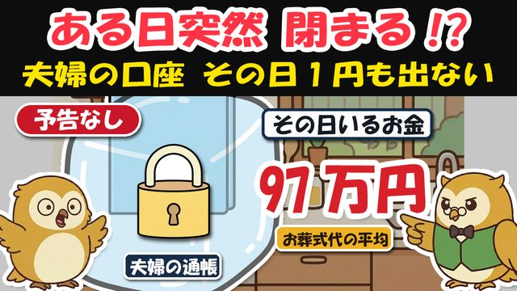
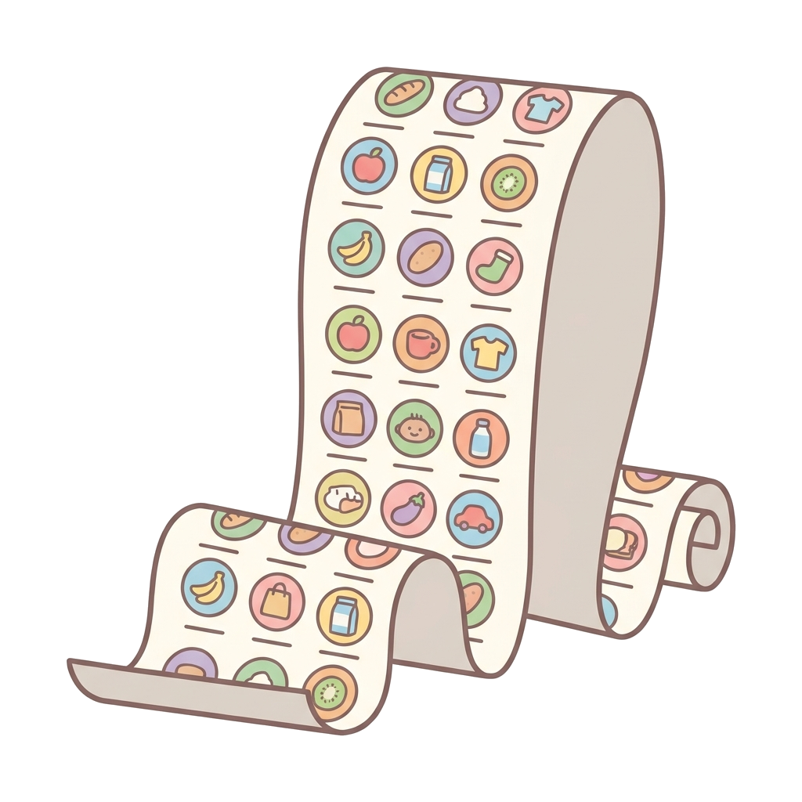
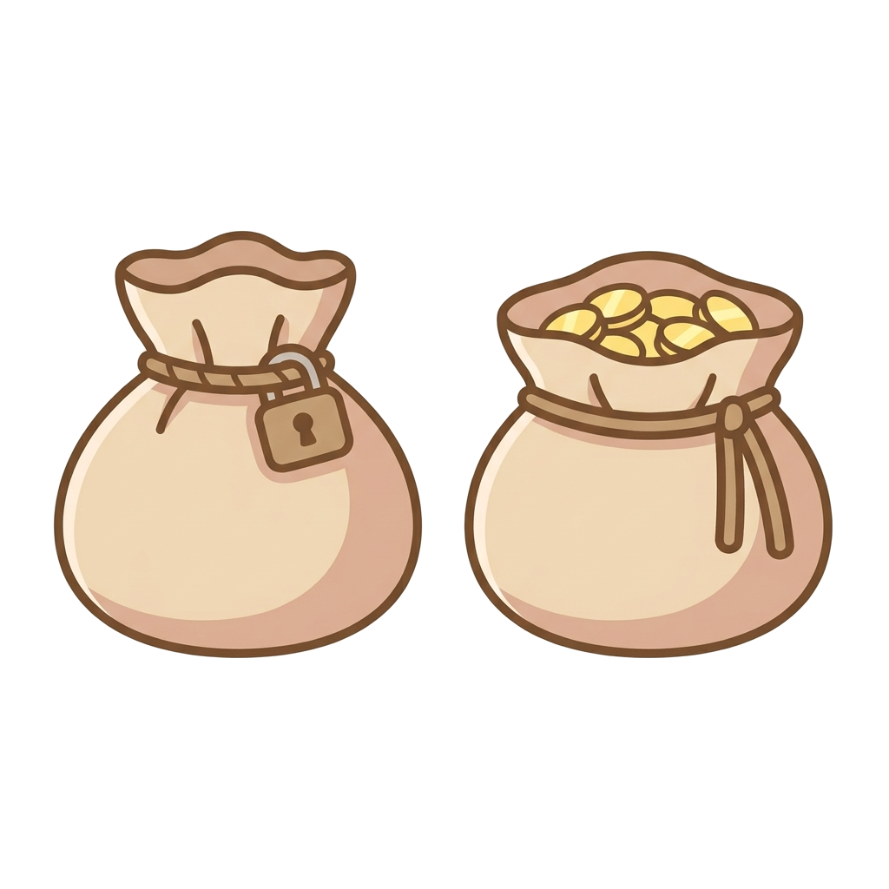

🎁 もしもの時のお金ノート（窓口ひとこと台本＋書き込み式 口座1枚リスト）

よく来たな。約束の物を渡す。
夫婦のどちらかが亡くなると、銀行口座はその日から凍結される。
この紙は「その日、窓口で何と言えばいいか」と「元気な今日、何を書き残すか」を1枚にした物だ。
冷蔵庫の横にでも貼って、夫婦で一度いっしょに読んでほしい。
🔢 まず、覚えておく数字（この表だけでも保存の価値あり）
| 数字 | 意味 |
|---|---|
| 150万円 | 仮払い制度で、1つの銀行から先に受け取れる上限 |
| 残高×3分の1×取り分 | 仮払いの計算式（150万円と比べて低い方が上限） |
| 約97万円 | 葬儀費用の全国平均（2026年・民間調査96.73万円） |
| 原則5営業日ほど | 生命保険金が振り込まれる目安（書類がそろってから・会社による） |
| 数週間〜数ヶ月 | 相続手続きで口座の全額が動くまでの目安 |
| 2年 | 葬祭費・埋葬料（下のおまけ）の申請期限 |
計算の例：預金600万円・相続人が妻と子1人 → 妻は 600万×1/3×1/2＝100万円まで（150万円の枠内）。
🗣 窓口ひとこと台本（そのまま読めばよい）
その日の動き方は、この順番だ。
- 慌てて引き出さない（カードで勝手に下ろすと、借金ごと相続と見なされる恐れ＋家族げんかの火種）
- 生命保険の窓口に電話（保険金は凍結と無関係。いちばん早いお金）
- 銀行の窓口で「仮払い」を相談（当面の生活費とお葬式代のぶん）
| 場面 | かける先 | 最初のひとこと |
|---|---|---|
| 保険金を受け取りたい | 生命保険会社 | 「死亡保険金の請求をしたいので、必要書類を教えてください。受取人は私です」 |
| 当面のお金が要る | 亡くなった方の銀行 | 「遺産分割前の払い戻し（仮払い制度）を使いたいので、必要書類と上限額を教えてください」 |
| 相続の手続き全体 | 同じく銀行の窓口 | 「名義人が亡くなりました。相続手続きの案内をお願いします」 |
| 数万円の給付をもらう | 市区町村の役所（下のおまけ） | 「葬祭費の申請をしたいです」 |
| 元気な今日・口座の整理 | 使っていない銀行 | 「使っていない口座を解約したいです」 |
⚠️ 仮払いに必要な書類のめやす＝亡くなった方の出生から死亡までの戸籍（除籍）謄本・相続人の戸籍・印鑑証明など（銀行により異なる）。
⚠️ 仮払いは即日ではない。出してから振り込みまで1〜2週間ほど＝お葬式の支払いに間に合わないこともある。だから下の「備え」が効く。
✎ 書き込み式「口座の1枚リスト」（今日の備え・その2）

家族が本当に困るのは「どこに口座があるか分からない」こと。特に通帳のないネット銀行・ネット証券。
書くのは銀行名・支店名・種類・用途だけ。暗証番号は絶対に書かない（盗まれたら金庫のカギごと渡すことになる）。
✎ ① 金融機関（ ）支店（ ）種類（普通・定期）おもな用途（ ）
✎ ② 金融機関（ ）支店（ ）種類（普通・定期）おもな用途（ ）
✎ ③ 金融機関（ ）支店（ ）種類（普通・定期）おもな用途（ ）
✎ ④ ネット銀行・ネット証券（ ）ログインの手がかりの保管場所（ ）
✎ ⑤ 生命保険（会社名 ）証券の保管場所（ ）受取人（ ）
✎ このリストの置き場所（家族と決めた場所： ）
□ 書き終えたら：使っていない口座は元気なうちに解約（凍結の解除手続きは銀行の数だけ必要になる。10年ほったらかしの預金は国の仕組みで移されて、戻すのに手間が増える）。

□ あわせて備え・その1：生活費の口座を夫婦それぞれの名義で持つ（凍るのは亡くなった方の名義だけ。目安は生活費の半年分。毎月の生活費の入れ先を分ければよい＝大金を一度に動かさない）。
□ 備え・その3：この紙を夫婦で一緒に読む（保険の受取人が誰か・仮払いがあること＝「知っていること」も備え）。
🎁 動画で話していない「市区町村からもらえるお金」（おまけ）
お葬式を出した家族は、申請すると給付金がもらえる。申請しないと1円も出ない、いつもの型だ。
- 葬祭費……国民健康保険・後期高齢者医療の加入者が亡くなった時。自治体により数万円（例：東京23区は7万円）。窓口＝市区町村の役所
- 埋葬料……会社の健康保険の加入者が亡くなった時。5万円。窓口＝健康保険組合・協会けんぽ
- 期限はどちらも2年。喪主（葬儀を行った人）が申請する。葬儀の領収書を捨てないこと
⚠️ 本資料は教育目的の一般的な情報だ。制度・金額は2026年7月時点の公表情報に基づくめやすで、口座の取り扱い・仮払いの可否・必要書類は金融機関や一人ひとりのご事情で変わる（出典＝全国銀行協会・民法909条の2・鎌倉新書2026年調査ほか）。実際の判断は、お取引の金融機関や専門家（弁護士・司法書士・税理士等）・お住まいの役所で必ず確かめてほしい。

備えは、“その日”からでは遅い。元気な今日のうちに。次の贈り物も、このLINEで届ける。— フク先生（老後資金の止まり木）